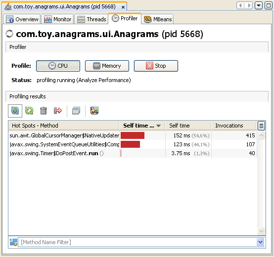
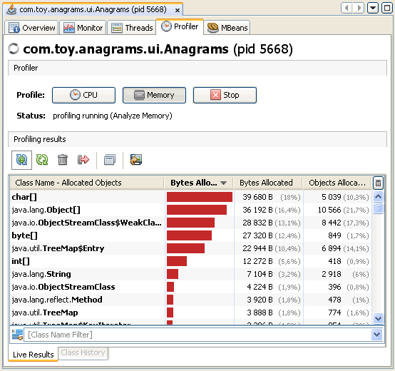
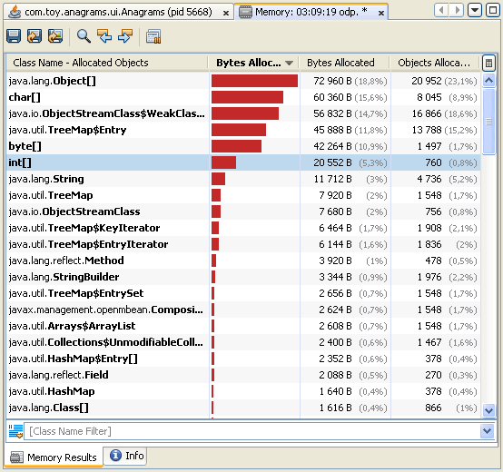

VisualVM presents data for local and remote applications in a tab specific for that application. You can have multiple application tabs open. Each application tab contains sub-tabs that display different types of information about the application.
The Profiler tab of an application enables you to start and stop the profiling session of a local application. Profiling results are displayed in the Profiler tab. You can use the toolbar to refresh the profiling results, invoke garbage collection and save the profiling data.
By default the profiling tool is not running until you are ready to profile the application. You can choose from the following profiling options:
When you start a profiling session, VisualVM attaches to the running local application and starts collecting profiling data. When profiling results are available they are automatically displayed in the Profiler tab.
The Profiler toolbar has the following buttons that enable you to work with profiling results.
The filter box below the profiling results enables you to filter the displayed results according to the name of the method. To filter the results, enter a term in the method name filter box, select which filtering method to use and press Return. You can see and select previous filter terms by clicking the arrow to the right of the method name filter box.
This profile command returns detailed data on method-level CPU performance (execution time), showing the total execution time and number of invocations for each method. You can choose to analyze the entire application, part of the application, or startup performance.
When analyzing application performance, VisualVM instruments all of the methods of the profiled application. Threads emit the "method entry" event when entering a method and generate the corresponding "method exit" event when exiting the method. Both of these events contain timestamps. This data is processed in real time.
When you analyse memory usage, VisualVM starts instrumenting the loaded classes and displays the total number of objects allocated by each class (including array classes) in a table. For each class currently loaded class in the JVM, the profiling results display the size and number of objects allocated since the profiling session started. The results are automatically updated as new objects are allocated and as new classes are loaded.
VisualVM displays the number of objects as an absolute number and as a percentage. The bytes allocated are also displayed as a graph representing the percentage of bytes as well as the total number of bytes allocated by each class.
 